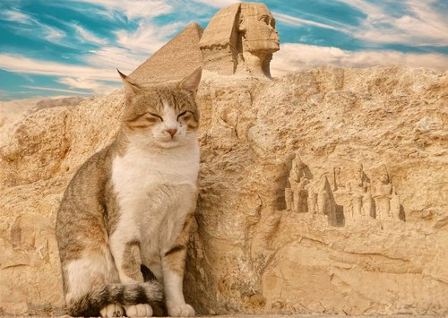
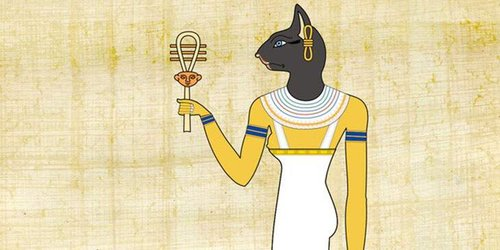

Gatos eram adorados no Egito Antigo
Os egípcios acreditavam que os bichanos eram criaturas mágicas, capazes de trazer boa sorte às pessoas que cuidavam deles.
Para homenagear esses animais estimados, famílias ricas os vestiam de jóias e os alimentavam com guloseimas próprias da realeza. Quando os gatos morriam, eram mumificados. Como prova de luto, os donos de bichanos raspavam as sobrancelhas e continuavam a lamentar até que as sobrancelhas voltassem a crescer.
É possível perceber que na arte da época havia muitas estátuas e pinturas com todos os tipos de felinos. Os gatos no Egito eram tão especiais que aqueles que os matavam, mesmo por acidente, eram condenados à morte.
Uma curiosidade é que, segundo a mitologia egípcia, deuses e deusas tinham o poder de se transformar em diferentes animais. Apenas uma divindade, a deusa Bastet, que representava fertilidade, domesticidade, música, dança e prazer, tinha o poder de se tornar um gato.
Divindade Bastet
Toda essa adoração com o gato do Egito começou devido à deusa Bastet. Os egípcios, a fim de adorá-la, criaram cemitérios inteiros de gatos domésticos mumificados — muitas vezes, enterrados perto de seus donos.
Essa deusa felina foi amada durante a maior parte da história do Egito Antigo, sendo uma das primeiras divindades egípcias atestadas. Na mitologia egípcia antiga, Bastet era uma das várias divindades que detinham o título de Olho de Ra. O que significava suas habilidades de deus egípcio de gato, como protetora e vingadora.
Como os egípcios realmente domesticavam seus gatos, tornando-os valorizados por membros da família, em vez de apenas animais semi selvagens que perseguiam e protegiam as casas de seus donos, a imagem de Bastet se tornou muito mais suave — e ela passou a ser uma deusa da família, fertilidade e amor.
Assim, eles começaram a considerar o gato do Egito como membros importantes e amorosos de suas famílias, e os trataram com tanto respeito e dignidade quanto seus próprios filhos.
Essa divindade era representada como uma mulher com a cabeça esbelta e graciosa de um gato, ou frequentemente como um bichano sem atributos humanos. Isso, por sua vez, deu origem à crescente adoração de gatos do Egito Antigo. Pois eram considerados animais reverenciados e sagrados.